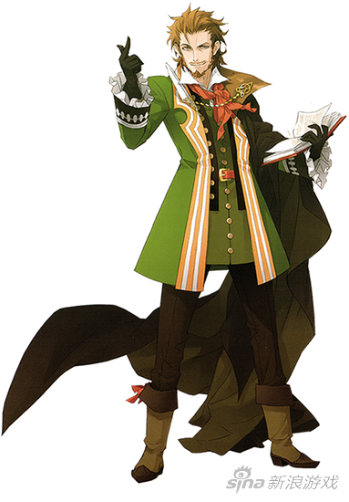

问个问题：你们为什么喜欢变身题材？
刚刚码了八百字关于这个问题的论述，一不小心F5……唉
重来……
前不久我看了一部小说，里面的有些剧情挺讨厌的，所以就突然想起这个问题。
你们看的第一部变身小说是什么？
我的话好像是火影凤凰传，或者是一直想去的世界。
具体记不清楚是哪一本啦，应该就是他们两个之一。
我与其说喜欢看变身的，不如说喜欢看女主。看女主的原因是对美的追求，而这美是人类独立，自尊，自信，自强的体现。
男人独立，自尊，自信，自强什么的真的没什么好看的，因为社会主流如此。
其实看女主的话，晋江有很多女主小说。
然后就和男生写男主喜欢开后宫一样，女生写的女主也喜欢开逆后宫。
虽然我没真的去晋江看过23333……
然而大概印象还是有的。当然，肯定也不全是这样类型，不过这样类型到底还应该是主流。
而所谓的主流那些女的大部分都是小鸟依人，相夫教子，性格柔弱，虽然会有情节体现她们的坚强，但表现的让人看到的是她们属于谁，而不是，她们是独立的个体。
男主小说里的女主角很多都是这样，虽然在设定上很坚强很独立的人，然而跟了男主之后全都是花瓶。
所以我才喜欢看变身女主，因为有男性意识的依托这样的女主会比纯粹的女主更加坚强。
不过，依旧存在很多问题。最显著的就是嫁人。
到底是生物体雌性对雄性其实发个情什么的没什么问题。但问题是，这样的情节在后续表现很多在我看来都是放弃的独立。而选择相夫教子，依托男性。
人是动物，群居动物，但同时也是独立的个体。
放弃了自我，放弃了思想这样不该被称作人。
当然变身嫁人的女主也不全都是这样，但在这里我还是带有偏见的认为的她们全都是放弃了自我的独立。这是对现实的妥协，是对主流男尊女卑价值观的妥协。
如果你是天下无敌面首3000那没问题，但是变身嫁人的女主都是被莫名其妙的小感动俘虏，然而放弃自我成为谁的所有物。
从身体到心灵，完全就是女性，是弱者。
莎士比亚说：脆弱啊，你的名字是女人。
不同的人对此看法不一样。而我的看法是，这不是莎士比亚对女性地位在男人之下的认同，而是他对女性哀其不幸，怒其不争的哀叹。
女性不比男性差，虽然说体能上有差异，不过毫无意义，体能方面就算先天不足，后天也可以弥补。
人类能称霸地球，是因为有一件神装。人拥有这颗星球上最发达的大脑，文明的进步不是靠肌肉而是大脑。
变身嫁人这种女主在我看来不是基佬，那就是不愿努力的弱者。
基佬可以原谅，但是无法原谅弱者。
弱者并不可怕，可怕的是放弃了自我的独立不愿意付出努力成为强者。
我讨厌变身嫁人。
男人和女人的差异，不是体能的差异。是心灵的差异，而心灵并不是天生的，是后天教育导致的。
男女应当是平等的，但是大部分女性的放弃了自己的尊严。
社会上很多女人的叫嚣着女权，然后她们只有在享受便利的时候才会去宣扬，在日常行为里却很少去体现自己的独立，平等。
因为一点小伤口就咋呼看见老鼠看见蟑螂就乱跳，很多肤浅的小说都说这是女人的天性。很可笑。去对比一下古代草原的女性和中原的女性，这从来不是天性这是教育的失败，或者社会主流保持现有秩序的刻意为之，也是女人自甘堕落的表现。
当然，享受便利的时候叫嚣的权利。需要执行义务的时候却总是逃避。这不仅是女人，也是所有人的共同点。
最后——
——女人，你可以是强者！
……
扯多了就会有点跑题，其实这里说的有一些是我的感悟。
从不同方面看有不同的解读，男人和女人，强者和弱者。
一定程度上也有我对自己现状的思考。
我是弱者我想成为强者所以我讨厌变身嫁人，因为这像是对现实的妥协，对努力的否定。
然而事实是，我有很多的想法，但是我根本就没有动力，没有欲望真的去付诸行动。
如果，从不好的角度去解读，希望女性自立自强的我，该不会希望自己被包养吧？Σ( ° △ °|||)︴
当然开玩笑的，这并非是我的价值观。
我不喜欢男强女弱，也不喜欢女强男弱，我是平衡主义，平等主义，同样也是门当户对主义。
不过经过我的分析，虽然我讨嫁人，但是如果变身这种事情发生在我的身上，我还真有四成的可能去嫁人。
我的人格对花钱很吝啬，然而对赚钱的欲望全非常低。
有些人努力，努力就像是本能一样呀。
但是我的话，不知道为什么要努力，为什么要努力？
甚至我不知道为什么活着，为谁活着。
这样的，我说不定真的是在随波逐流。
不过只要没人逼婚单身的可能性更高。
……
我很聪明但也很蠢，。
文凭真的没什么用，但其实也很有用，这是一个衡量的标杆。
文凭这个标杆衡量的并非是知识。而是心理，是人生观。
我们都很聪明，除了智障没有真的学不会东西的人。但是，有的人学历只有高中。有的有大学嗯，还有的是博士，博士后，造成造成这份差异的，并非是智商。而是内心，大部分人，并不是全部人。大部分学历越高的人他们的人生观里，目标越是明确。，学历低不是因为蠢而是因为没有目标没有明确的目标，很茫然。
我没有找到自己的目标，所以很空虚很茫然。
你们中有很多人应该已经成年了也有一部分没有成年，对成年的没什么好说的。而对于没有成年的——
早点找到自己的目标这样才能为之奋斗，独立点，自主点不要随波逐流，不要别人说什么就信什么。即使是父母说的未必是对的。喜欢做什么就勇敢去做。未来是自己的，要为自己负责，不能留下遗憾。
没有发生的事即使可能性再大也不是结果，与其瞻前顾后，不如放手一搏。即使摔得头破血流，再站起来就好了，这永远比畏畏缩缩，止步不前要好。
其实最近我的心情不太好……